Shaping Airflow with Architecture
Summary
In urban cities, buildings are getting denser and taller, which then consumes more energy and absorb more thermal heat. This contributes to higher Urban Heat Island (UHI) effect, which can cause thermal discomfort for indoor and outdoor spaces. In this situation, bringing more natural airflow will help to cool down the urban cities and improve thermal comfort. Based on the CFD analysis conducted on the selected site in Singapore, weaker wind speed are observed at lower floors and stronger wind speed are observed at higher floors. With the main focus on improving thermal comfort at the pedestrian level, there is a potential to distribute air from higher to lower floors by shaping the overall building mass.The final form is developed based on the theory of venturi effect by creating pressure differences to distribute air. A canopy structure is formed using Kangaroo2, a plugin in Rhinoceros Grasshopper for form optimization. With the canopy structure, there is a significant improvement in air movement at the pedestrian level from all prevailing wind direction. Different types of activity spaces are designed based on the different wind speed.
About Me
Ho Zhi Yuan is a Master’s Student at the Singapore University of Technology and Design (SUTD), recently completed the Master of Architecture programme in December 2020. Prior to his tertiary education in SUTD, he earned his Diploma in Green Building and Sustainability from Temasek Polytechnic in 2016. Zhi Yuan has a strong interest in environmental and sustainable design, specifically in the area of urban airflow and natural ventilation in the built environment. He has developed his master thesis “Shaping Architecture with Airflow” under the guidance of Assistant Professor Christine Yogiaman and Assistant Professor Kenneth Tracy from the Architecture and Sustainable Design pillar in SUTD.Name
Ho Zhi Yuan
Mentor
Kenneth Tracy/Christine Yogiaman
Typology
Research, Mixed-Used
Site Location
Singapore

![]()
![]()
![]()
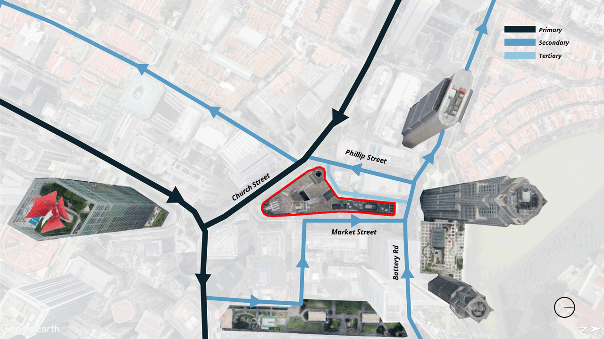
Site Location
The site is located at 88 Market Street in Singapore CBD. It is within 5 minute walk from Raffles Place MRT. It used to be a multi-storey car park with food centre and currently it is undergoing redevelopment. With many tall buildings surrounded the site, it creates bad wind shadow specifically on the street level whereby pedestrian can experience thermal discomfort. CFD Analysis is conducted using OpenFOAM to understand the wind condition of the site from different prevailing wind direction.
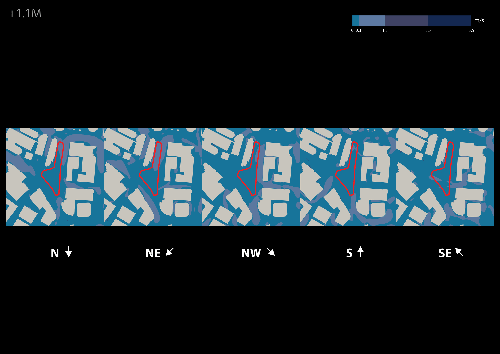
Form Generation
Bringing in the concept of venturi tube, the base form is generated using Kangaroo2. A base mesh is created along with fixed curves which determines the shape and the size of each openings. The height of each openings are determined by the amount of upward forces. Once it converges, the mesh will be remesh into quads before proceed with panelization.
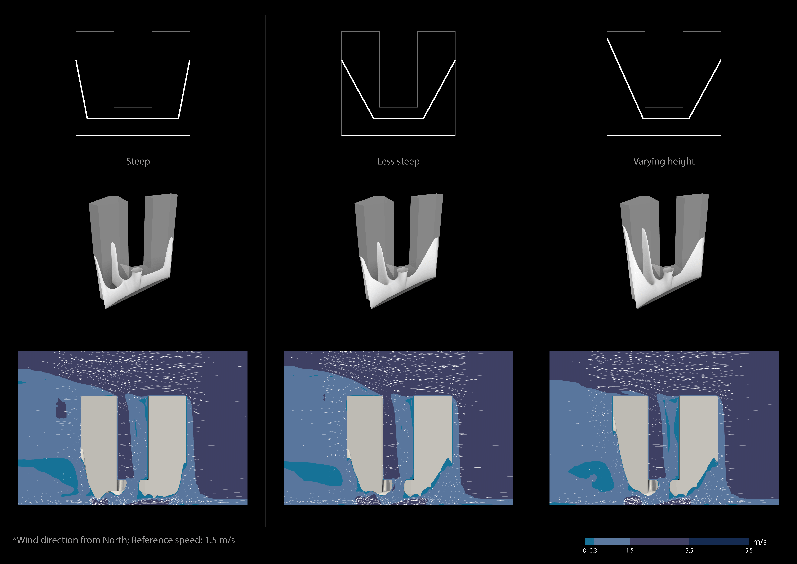

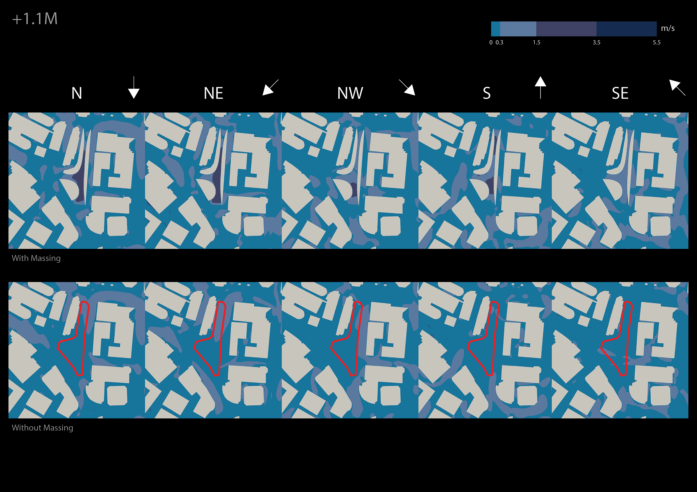
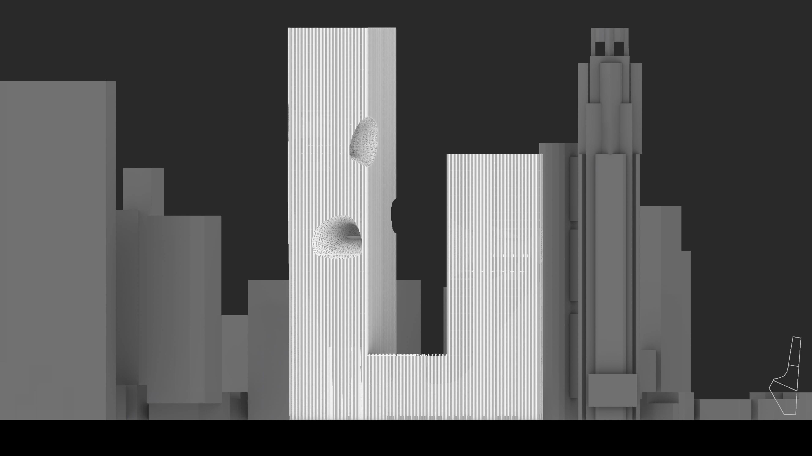
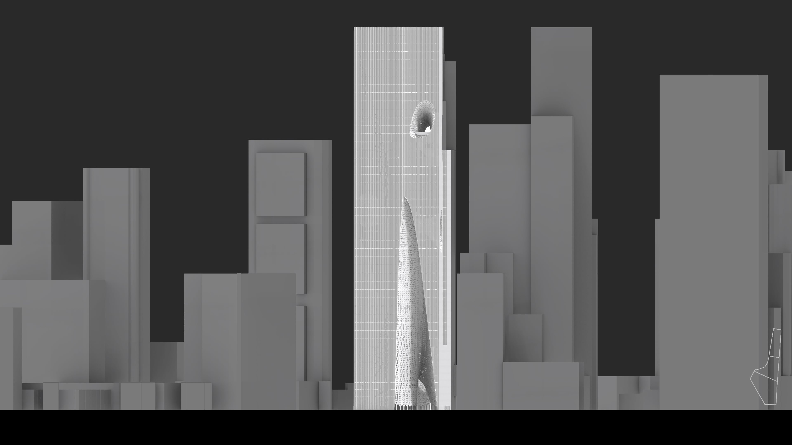
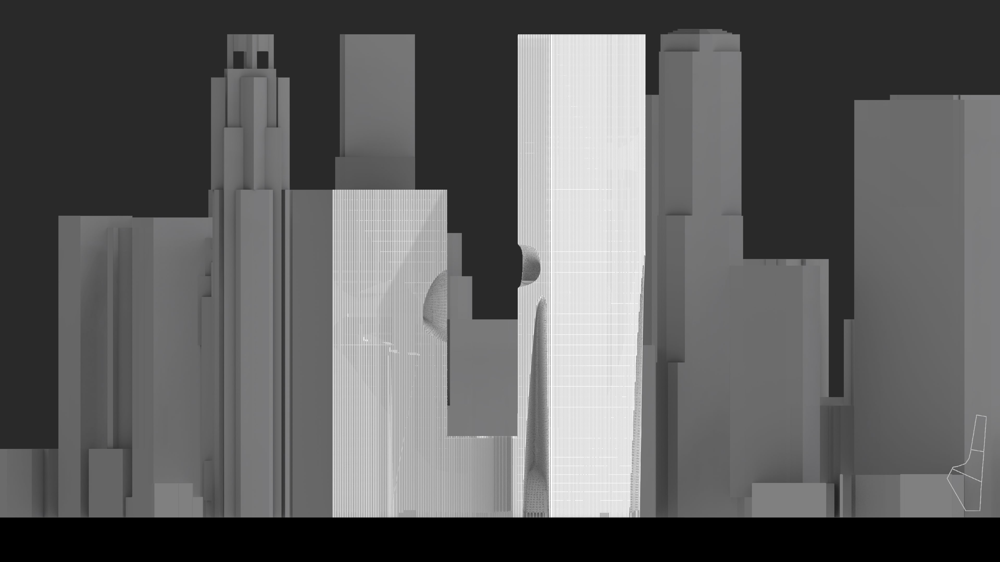
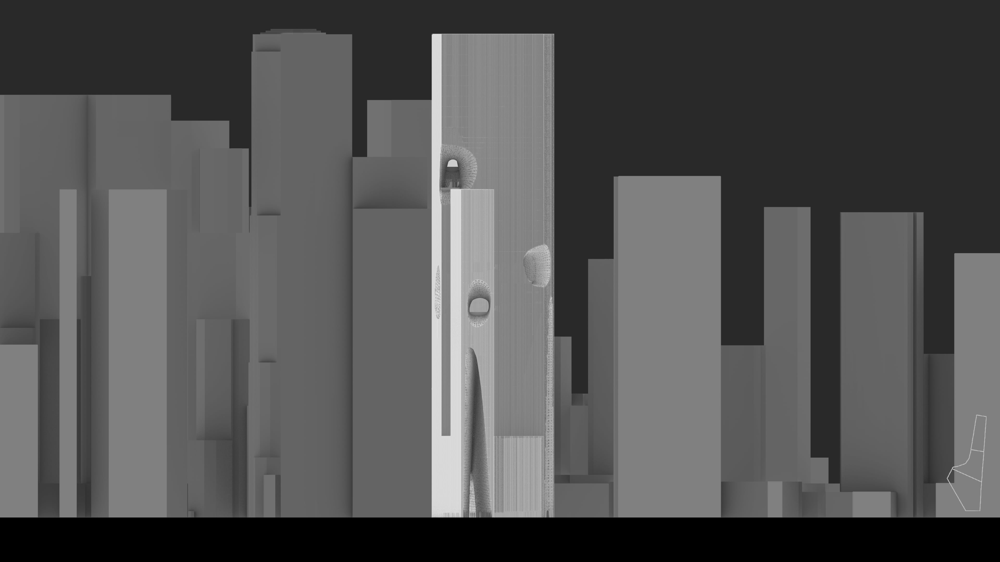
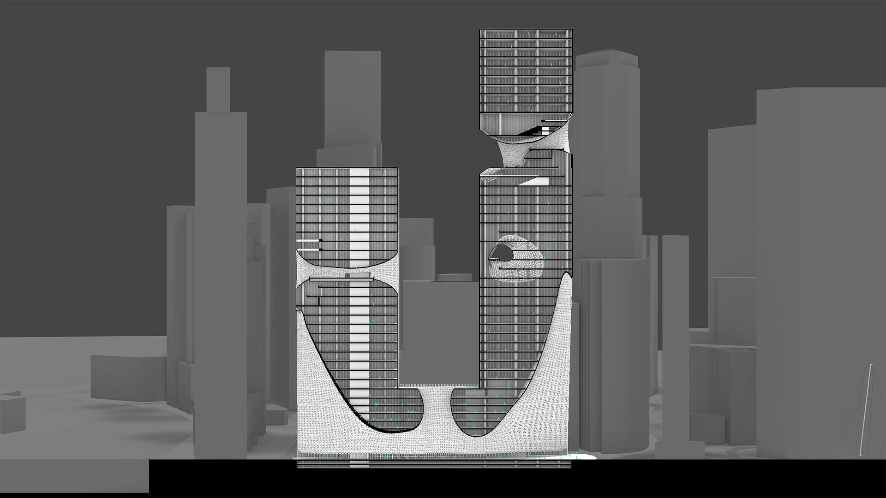
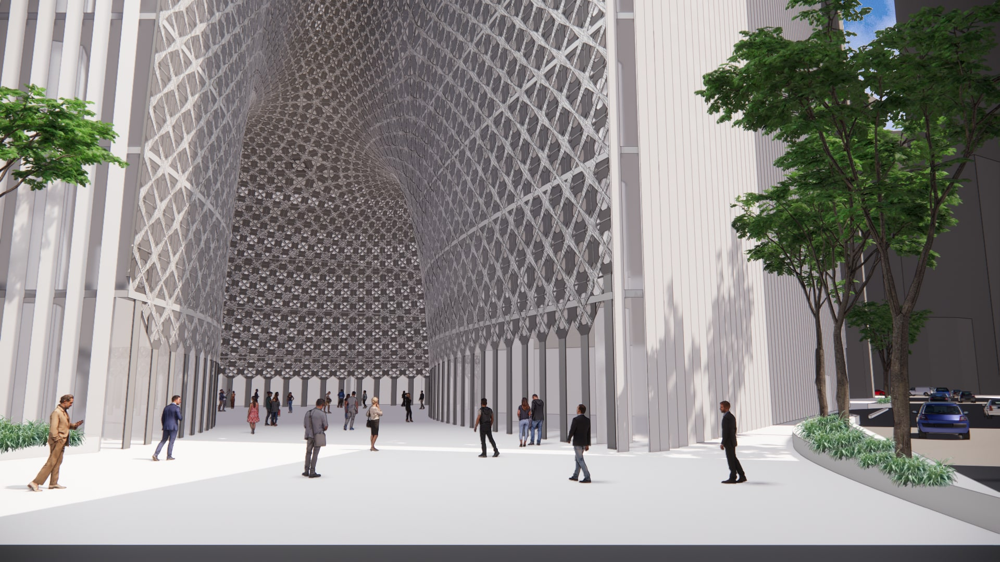
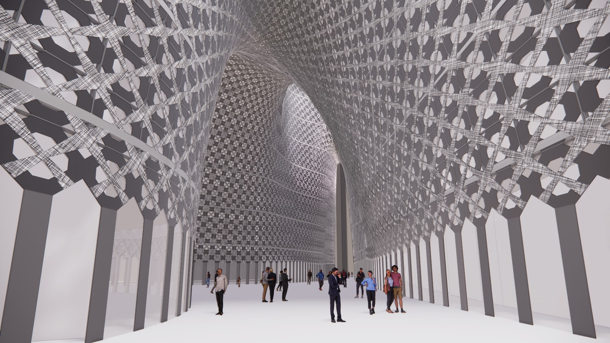
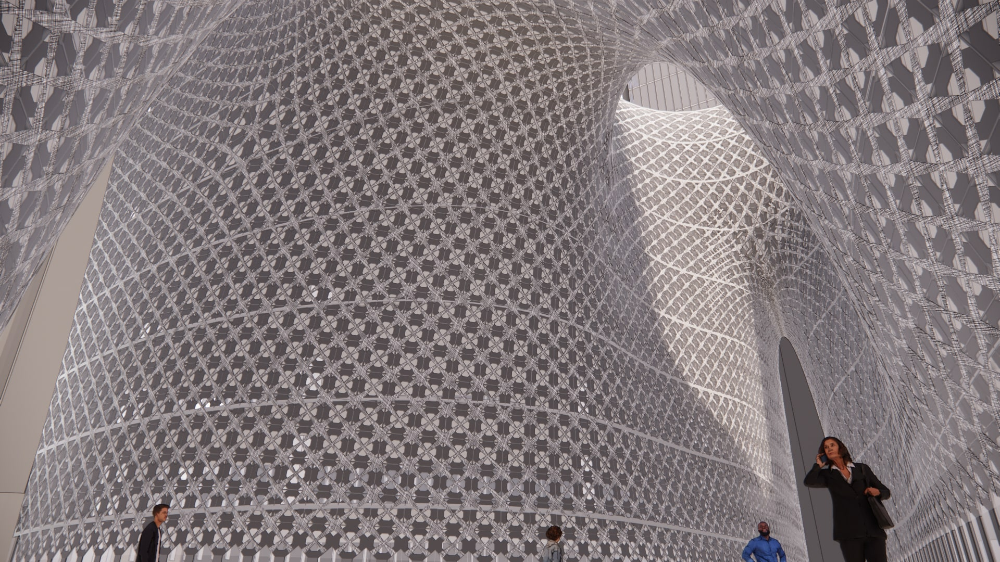
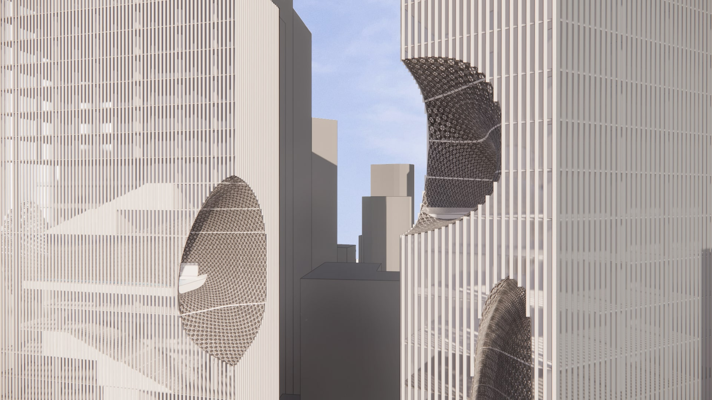
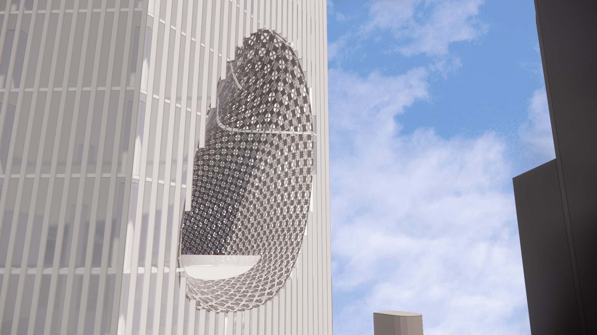